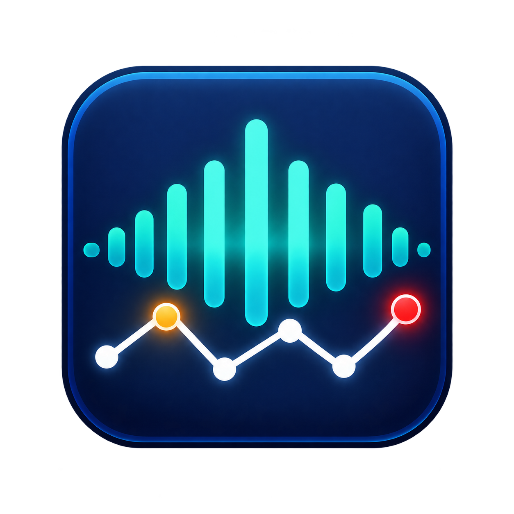
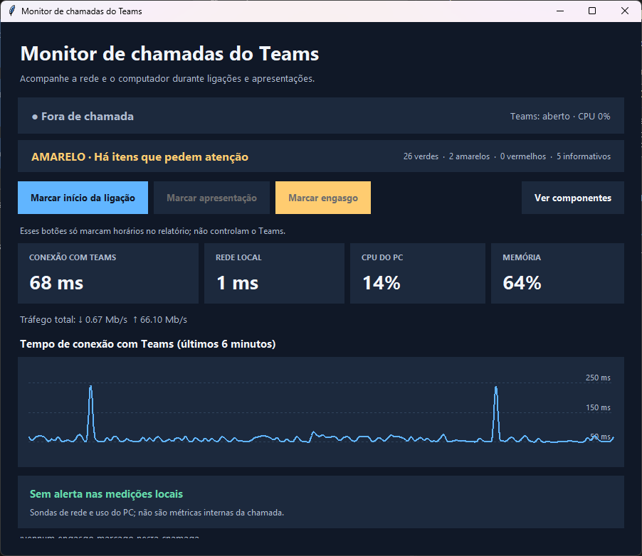

Conexão e DNS
Acompanhe o tempo de conexão com serviços Microsoft, o adaptador de rede e eventos de DNS do Windows.

FirawMonitor de Chamadas Microsoft StoreFIRAWYNIX / DIAGNÓSTICO LOCAL
Acompanhe a rede, o áudio e o desempenho do computador durante reuniões. Marque o momento de um engasgo e compare com os registros do PC.
Confira a disponibilidade e a versão atual na página da Microsoft Store.

O QUE VOCÊ CONSEGUE VER
Indicadores simples para investigar os pontos do computador que podem afetar uma reunião.
Acompanhe o tempo de conexão com serviços Microsoft, o adaptador de rede e eventos de DNS do Windows.
Confira dispositivos padrão de comunicação, volume, mudo, permissões e serviços de áudio.
Relacione CPU, memória, tráfego e alertas de hardware com o horário em que a voz engasgou.
Marque início de ligação, apresentação e engasgos. Os arquivos de diagnóstico ficam no próprio computador.
FLUXO SIMPLES
O monitor continua coletando indicadores locais enquanto está aberto, mesmo fora de uma ligação.
Veja o estado geral e os componentes que merecem atenção.
Registre início, apresentação e o instante em que ouvir uma falha.
Compare os horários com as medições e os eventos registrados.
TRANSPARÊNCIA
O aplicativo não grava áudio, vídeo, tela, mensagens nem nomes de participantes. Os relatórios permanecem no computador e podem ser abertos ou apagados por você.
As sondas mostram sinais locais. Elas não medem diretamente o fluxo de mídia da chamada e, sozinhas, não provam a causa de um problema.
Ferramenta independente, sem afiliação, certificação ou endosso da Microsoft.
Ler política de privacidade ↗